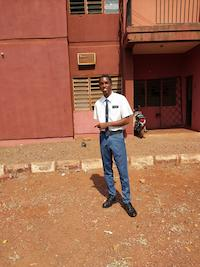

Eric Uwagboe | WDD 130
My name is Eric Uwagboe, I live in Nigeria, Benin City. I am a Disciple of Jesus Christ, I smile a lot and I love to explore things. I am hoping to learn a lot of new things from this course and also make new friends.
My name is Eric Uwagboe, I live in Nigeria, Benin City. I am a Disciple of Jesus Christ, I smile a lot and I love to explore things. I am hoping to learn a lot of new things from this course and also make new friends.